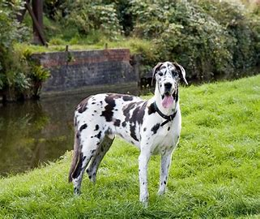
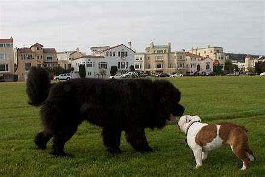
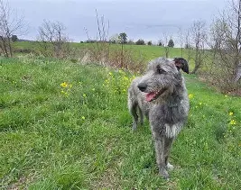
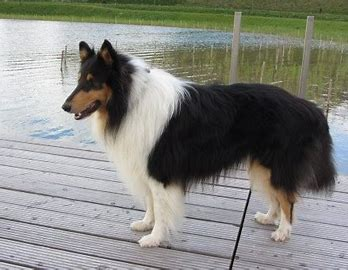
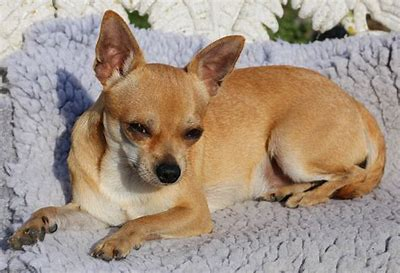
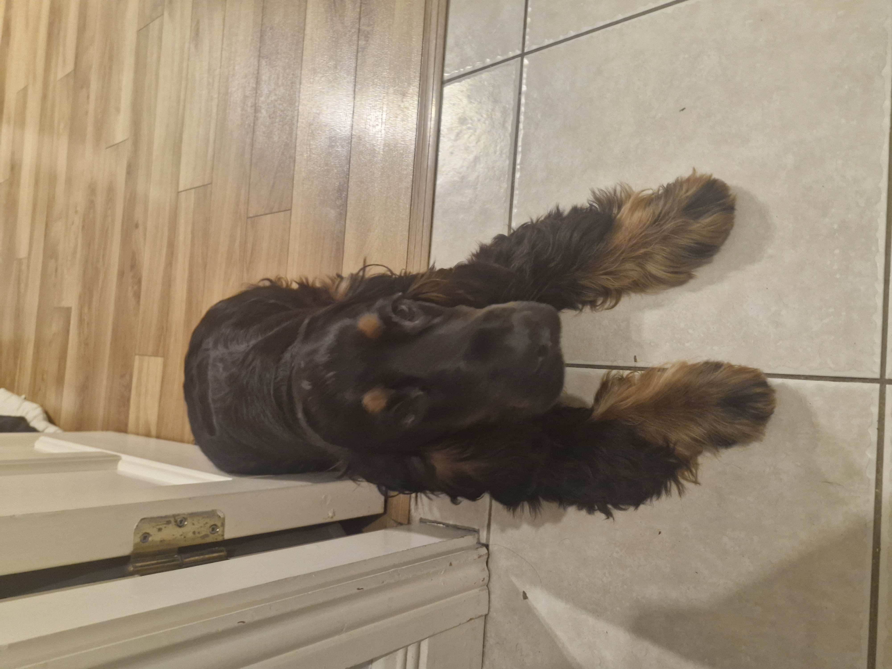
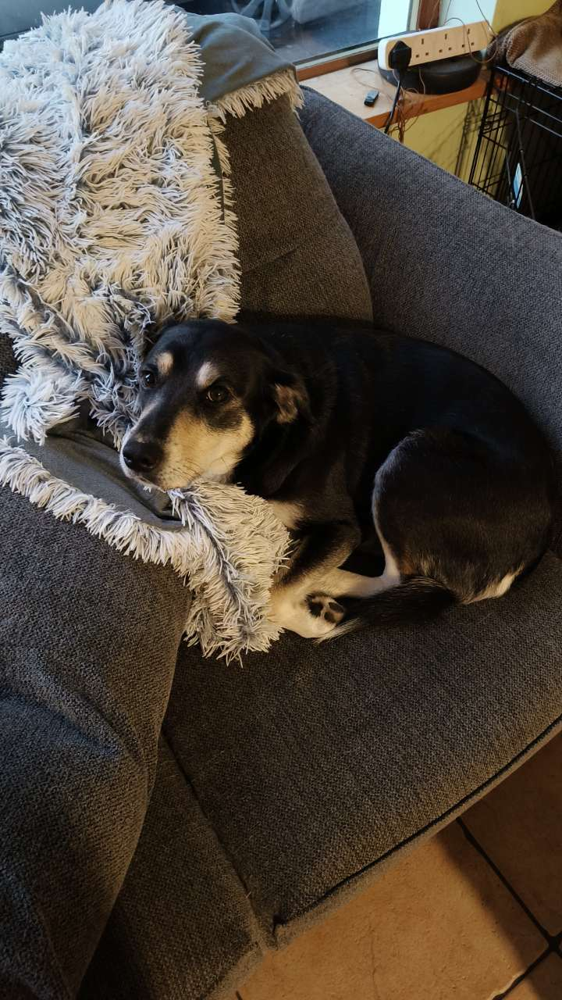
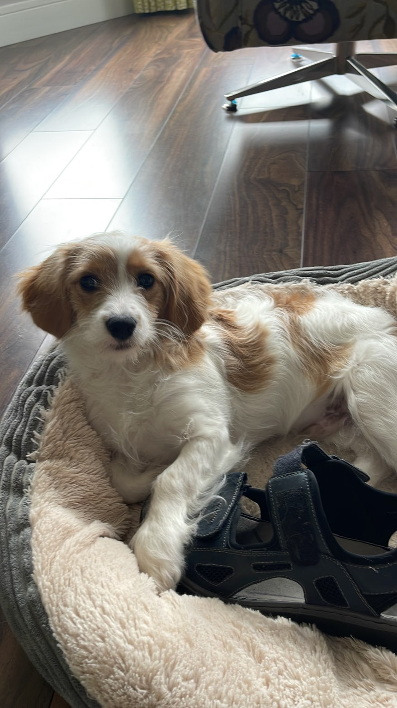
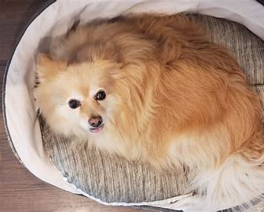

Dogs Available for Adoption
All of our dogs are vaccinated, microchipped and ready to go home. Click on any dog to learn more about them.
Available
Milo
Beagle
4 Years
Available
Nova
Great Dane
2 Years
Available
Max
Newfoundland
5 Years
Available
Atlas
Shiba Inu
3 Years
Available
Bear
Irish Woldhound
1 Year
Available
Scout
Sheepdog
6 Years
Available
Willow
Chihuahua
2 Years
Unavailable
Riko
Cocker Spaniel
4 Months
Unavailable
Aero
Black Labrador
3 Years
Unavailable
Archie
Cocker Spaniel
3 Months
Available
Turbo
Pomeranian
5 Years
Unavailable
Bonnie
Cockapoo
1 Year